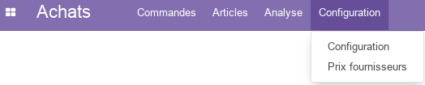

Module Achats¶
Ce document illustre les différentes fonctionnalités du module Achats d’odoo 13 community.
Présentation du module¶
Ce module est destiné à la gestion des fournisseurs et des commandes d’achat. Il permet :
d’automatisez le processus d’achat, d’envoyez automatiquement des demandes de prix aux fournisseurs en fonction des besoins de l’inventaire.
de définir des règles d’approvisionnement, de logistiques, de commandes de vente à l’aide de prévisions de commandes de fabrication, tout cela en fonction des besoins du stock.
de sélectionnez différentes méthodes d’approvisionnement pour chacun des produits en cohérence avec les stratégies de fabrication et de livraison de l’entreprise.
de listez les prix des fournisseurs et de vérifiez la disponibilité des produits tout en comparant les meilleurs prix.
d’importer facilement les listes de prix et les références des fournisseurs afin de prendre les meilleures décisions concernant les achats selon les promotions et conditions spéciales en vigueur.
de lancer des appels d’offres, afin d’obtenir le meilleur prix en négociant avec plusieurs vendeurs.
de lancez les procédures d’acquisition, d’intégrer les réponses des sous-traitants et de comparez les devis afin de choisir la meilleure offre.
d’obtenir des statistiques sur les achats afin d’analyser, de prévoir et de planifiez efficacement les commandes.
de gérer plusieurs entreprises grâce aux règles inter-entreprises.

Configuration (admin)¶
Cette section, réservée aux administrateurs et Gestionnaires des ventes, permet de définir les paramètres généraux du module, tel que le configurateur de produits, les tarifs, les devis, les commandes, l’exépdition et la facturation.
Configuration des Tarif¶

L’option Remise permet aux vendeurs de proposer des remises sur des articles.
Équipes commerciales¶
Cette section permet de renseigner les informations nécessaires aux équipes commerciales de l’entreprise. Les membes des équipes doivent tous disposer de comptes utilisateurs.

Commandes¶
Cette partie permet de gérer les Devis et les Commandes.
Analyse¶
La partie analyse permet aux Gestionnaires des ventes de visualiser des vues synthétiques de la situation des ventes sous différentes formes : tableau croisé, graphes.
Plus de détails¶
Pour la collaboration sur les formulaires de ce module, consulter la fonctionnalité conversations.